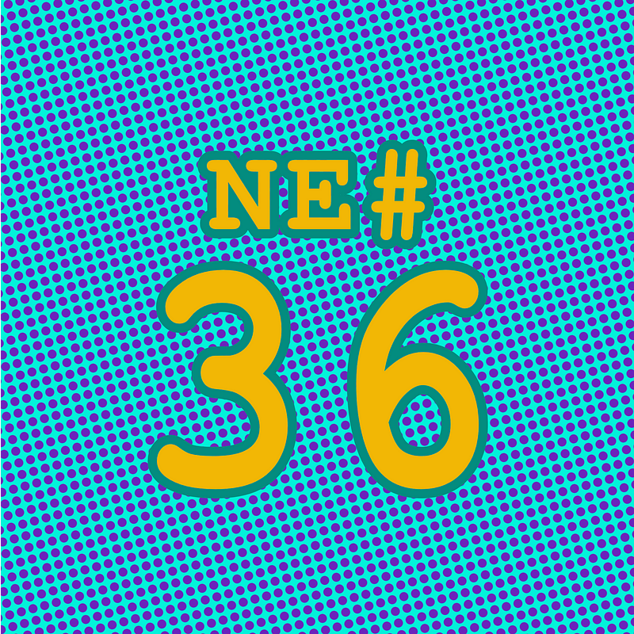

Die Nerd Enzyklopädie 36 - Das kik & left-pad Drama

NPM (Node Package Manager) ist ein Paket Manager für JavaScript und eine Plattform für Pakete, also Software, um die Funktionalität von JavaScript zu erweitern. Es gibt einige Pakete, die sehr populär sind und in vielen JavaScript-Programmen verwendet werden. Dass das nicht nur praktisch ist sondern auch kritische Abhängigkeiten erzeugt, demonstrierte Azer Koçulu im Jahr 2016.
Koçulu stellte damals über NPM eine Vielzahl von Paketen zur Verfügung, darunter auch kik, ein kaum bekanntes Paket, um Templates zu erstellen. kik ist aber auch der Name einer Messenger-App mit seinerzeit rund 270. Mio. aktiven Nutzer:innen.
Eines Tages erhielt Koculu Post von Bob Stratton, einem Rechtsanwalt, der die Interessen von Kik interactive vertrat, dem Unternehmen hinter dem Messenger. Stratton bat darum, dass Koculu sein Paket umbenennt, verwies dabei auf die eingetragene Handelsmarke und bot im Gegenzug sogar 30.000 Dollar an.
Für Koculu war das keine Option, also nahm Stratton Kontakt mit NPM auf. Dort schlug man sich auf die Seite von Stratton, was Koculu nicht sonderlich wohlwollend aufnahm. Er fühlte sich als David im Kampf gegen Goliath. Koçulu gegen die seit jeher wenig beliebten Patentanwälte!
Seine Konsequenz: Er zog all seine 273 Pakete von NPM zurück. Darunter befand sich auch „left-pad“, ein unscheinbares Paket, das nur aus 11 Zeilen bestand und lediglich dem Zweck diente, eine Zeichenkette mit einem bestimmten Wert zu befüllen.
Das löste eine Kaskade von Ereignissen aus: left-pad wurde von vielen Entwickler:innen in ihren Projekten genutzt, darunter auch Pakete, die wiederum in anderen Projekten genutzt wurden. So entstanden tausende Abhängigkeiten und Fehlermeldungen. Es kam zu massiven Problemen bei Updates und der Entwicklung, nur weil 11 Zeilen simpler JavaScript Code nicht mehr verfügbar waren.
Das Problem wurde zum Glück relativ schnell behoben. Innerhalb von 10 Minuten veröffentlichte Cameron Westland eine Alternative. Insgesamt dauerte die Fehlerbehebung 2,5 Stunden [NPM1] [INFO4].